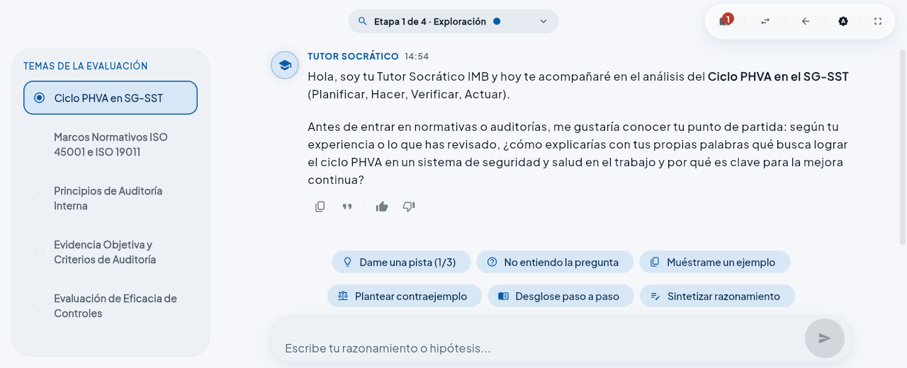

● En producción
IA & Educación
Repo privado
Tutor Socrático IMB
Asistente conversacional con IA para capacitación corporativa · IMB Institute
Asistente educativo inteligente que guía a estudiantes mediante preguntas progresivas (método socrático) en lugar de respuestas directas. Embebido directamente en el aula virtual de IMB mediante el protocolo LTI 1.3 sobre Moodle, con soporte unificado para Web y Móvil.
Tecnologías Utilizadas
- Python 3.13
- FastAPI
- PostgreSQL 16
- pgvector
- Redis
- Google Gemini
- Flutter
- Moodle LTI 1.3
- Docker Compose
- GitHub Actions
- Arquitectura RAG: Embeddings de Gemini y búsqueda semántica en PostgreSQL + pgvector sobre materiales del curso.
- Integración LTI 1.3: Lanzamiento seguro (OIDC) desde Moodle institucional con sincronización de contexto y progreso.
- Control de costos y concurrencia: Rate limiting y cola de peticiones con Redis para amortiguar picos de llamadas al LLM.
- Frontend unificado en Flutter: Misma base de código para el cliente web institucional y la app móvil de aprendizaje.